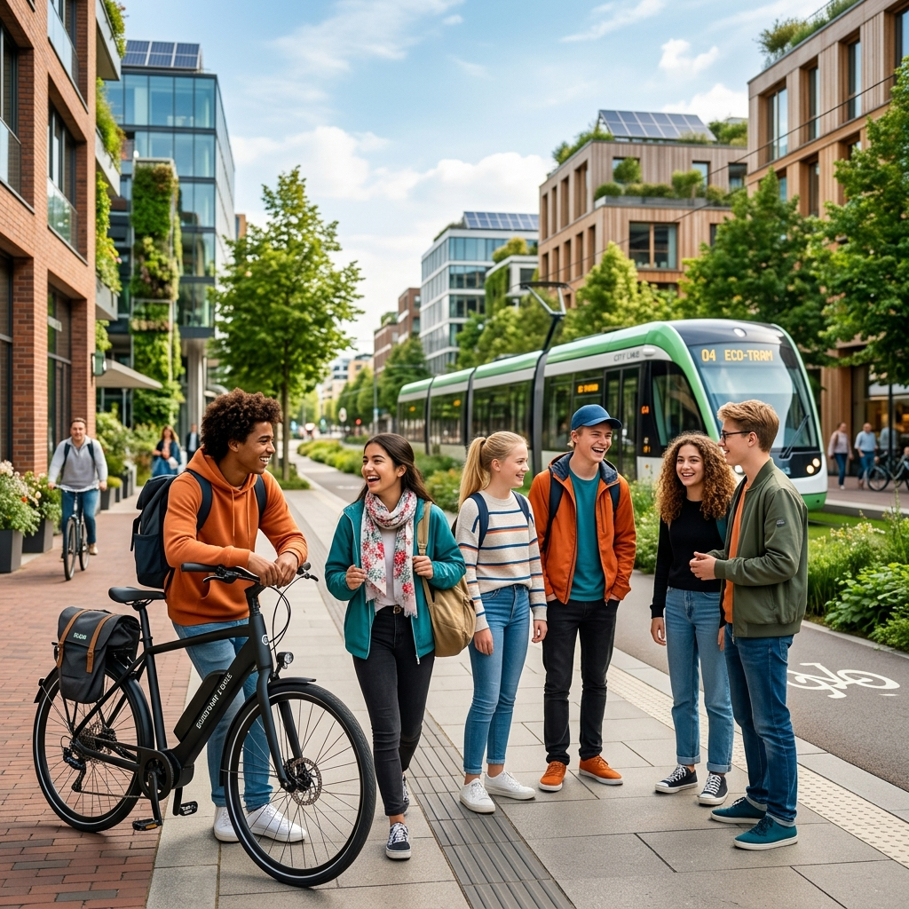
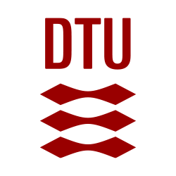
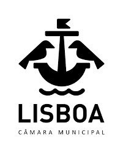
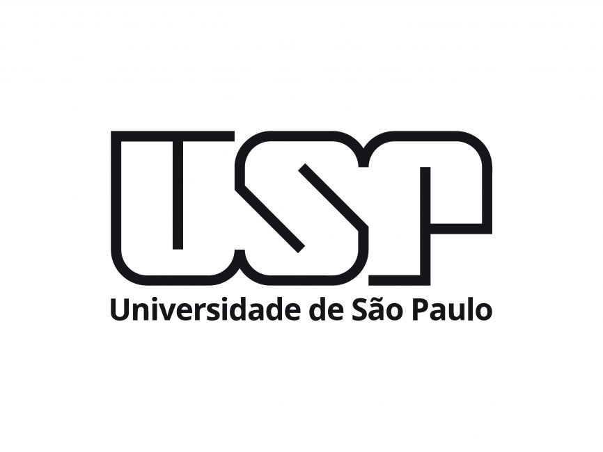

Empowering Youth
HANGOUT puts 14–18 year-olds at the centre of sustainable mobility planning — mapping their needs, breaking down barriers, and co-creating tools with them across four European cities.

The 15-minute city concept promotes proximity, accessibility and decarbonisation — but it largely overlooks the specific mobility needs and aspirations of adolescents aged 14–18 transitioning into adulthood.
HANGOUT addresses this gap head-on. Through comparative research across four European cities, Urban Living Labs in Lisbon and Holbæk, and open-source digital tools, the project puts young people at the centre of planning processes.
Our core research question: How can adolescent-inclusive urban mobility systems support sustainable transitions and strengthen young people's engagement in shaping their cities?
Background research, adolescent mobility data collection, governance mapping and benchmarking of policies and urban systems across four cities.
M1 – M16Urban Living Labs in Lisbon and Holbæk, participatory workshops with adolescents, and development of the HANGOUT Atlas and Policy Toolkit.
M13 – M34Engagement with the DUT Knowledge Hub, policy briefs, peer-reviewed publications, and open data to support cities across Europe and beyond.
M1 – M36Collect and analyse data on adolescents' lived accessibility experiences across four European cities, beyond school commutes.
Identify and address structural, institutional, and spatial barriers limiting adolescents' access to sustainable mobility options.
Actively engage adolescents through ULLs in Lisbon and Holbæk, with Adolescent Councils driving co-creation of solutions.
Deliver the open-source HANGOUT Atlas and Policy Toolkit for adolescent-inclusive urban planning, tested across multiple cities.
Systematic review, scenario-building, stakeholder workshop, ethical protocol and KPIs.
Primary data collection, travel behaviour modelling and equity impact assessment cross-cities.
Governance mapping, Sociotechnical Systems Analysis, stakeholder interviews.
Adolescent Councils and Core Teams in Lisbon and Holbæk; co-design workshops.
Open-source interactive GIS platform for participatory mapping and accessibility analysis.
Coordination, MEL framework, Data & IPR Plan, and Communication strategy.
Active engagement with DUT's 15-Minute City Knowledge Hub — co-authored outputs, policy briefs, and science-to-policy translation. Led by IST-ID (Filipe Moura, DUT Ambassador).



The project runs from January 2026 to December 2028. Follow our progress and get in touch with the team.